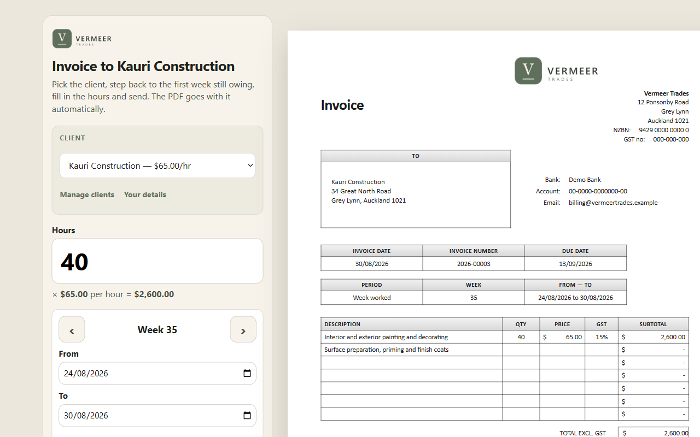

The problem
Erik subcontracts to a Dutch painting firm. Every week he owes them an invoice: hours times a fixed rate, sometimes a line of extras, plus 21% btw. He was doing it by hand — which is fine right up until the week you are tired, and you bill the wrong hours, or forget entirely, and get paid late for work you already did.
The failure was never the arithmetic. It was the friction: the invoice lived on a computer, and the hours lived in his head at the end of a day on site.
Constraints I set myself
- Phone first, and only. If it needs a laptop it will not get used.
- No accounts, no login. One user. A password is a thing that can go wrong for no benefit.
- No backend, no database. Nothing to maintain, nothing to breach, nothing to pay for.
- Dutch, in his words. The button says Versturen via WhatsApp, because that is what he is doing.
- Not in an app store. Review queues and a developer account to serve one person is absurd. A PWA installs from a link.
What I built
A static page that installs to his home screen and works offline. It opens on the
week that still needs invoicing, with arrows to move between weeks. He types hours;
the totals, the btw line and the invoice number fill themselves in. The PDF is built
on the device with jsPDF and handed straight to the share sheet, so the invoice goes
out through WhatsApp as a real attachment. Weeks already sent are marked
Al verzonden and keep their own invoice, so nothing gets billed twice.
State lives in localStorage. There is no server-side anything — nginx
serves five files.
Decision 1 — money is integers, never floats
The obvious version multiplies hours by the rate and adds 21%. The obvious version is also how you end up with an invoice that says €1.234,56 when the line items add up to €1.234,55 — and an invoice that does not add up is worse than no app at all. Every amount is converted to whole cents, added there, and only converted back for display.
function cents(n) {
return Math.round((Number(n) + Number.EPSILON) * 100);
}
function calc(data) {
const labor = fromCents(cents(data.hours * HOURLY_RATE));
const extra = fromCents(cents(data.extra));
const exclCents = cents(labor) + cents(extra);
const btwCents = Math.round((exclCents * BTW_RATE) / 100);
return { labor, extra, excl: fromCents(exclCents),
btw: fromCents(btwCents), total: fromCents(exclCents + btwCents) };
}Excerpt — app.js
The Number.EPSILON nudge is there because floating-point money rounds
the wrong way often enough to matter. Rounding currency is not something you get
correct for free.
Decision 2 — share the file, but never trust that sharing works
The nice path is the Web Share API: hand the browser a File and let the OS
show the share sheet with WhatsApp in it. The catch is that support is uneven — some
browsers expose navigator.share but refuse files, and a user who cancels the
sheet throws an AbortError that must not be treated as a failure. So the app
asks first, and keeps a fallback that always works: download the PDF, then open WhatsApp
with the message pre-filled so he attaches it himself.
async function shareOrDownload(blob, data) {
const file = new File([blob], filenameFor(data.invoiceNumber, data),
{ type: "application/pdf" });
if (navigator.share) {
try {
const payload = { files: [file], title: file.name };
if (!navigator.canShare || navigator.canShare(payload)) {
await navigator.share(payload);
return "shared";
}
} catch (error) {
if (error && error.name === "AbortError") return "cancelled";
}
}
downloadBlob(blob, file.name);
openWhatsApp(data);
return "whatsapp";
}Excerpt — app.js
Three outcomes, three different things to tell the user. Collapsing them into "sent!" would mean the app cheerfully lies on the one week the share sheet was cancelled by accident.
Decision 3 — HTTPS was not optional, and that shaped the deploy
A PWA will not offer to install over plain HTTP. No certificate, no Zet op telefoon, no home screen icon — and without the icon the app is just a link he has to go and find, which is the friction I set out to remove. That single requirement is why this runs on a VPS with a real domain and a Let's Encrypt certificate instead of being a file he opens locally.
certbot --nginx -d <the app's hostname> \
--non-interactive --agree-tos --redirect \
-m gerardbreukers@gmail.comExcerpt — one-time setup, deploy notes
What went wrong
The parts of this app that look over-engineered are all scar tissue. Integer cents,
the canShare guard, the AbortError branch, the certificate — none
of that was in the first version. Each one is there because the simple version worked
on my machine and then did something else on a real phone belonging to someone who
was never going to debug it for me.
What I would do differently
- Back up the state. Everything lives in
localStorage. Clearing site data wipes his invoice history, and he has no idea that is a thing that can happen. An export button is the cheapest possible insurance. - Make the rate and the VAT percentage editable. They are constants at the top of the file. That was right for one client and one rate; it stops being right the day either changes.
- Think harder about invoice numbering. It derives from the week, which is fine until a week needs two invoices.
The demo, and what building it taught me
The production app cannot be linked from here: it carries a real business's address, Chamber of Commerce number and IBAN, and it is a working tool rather than an exhibit. So there is a second build — same code, invented identity, English instead of Dutch — and making it forced me to fix the two things listed above.
Generalising from one client to many turned out to be the interesting part. The hourly rate stops being a constant and becomes a property of the client. The VAT percentage moves into editable settings. And every archived invoice has to carry its own copy of the rate, the VAT and the client's address — because editing a client's rate today must not silently rewrite what you charged them last month.
// Rate and VAT ride along with the invoice rather than being globals, so an
// archived invoice keeps the numbers it was actually issued with even after
// the client's rate is edited.
const rate = Number.isFinite(Number(data.rate)) ? Number(data.rate) : DEFAULT_RATE;
const vat = Number.isFinite(Number(data.vatRate)) ? Number(data.vatRate) : 21;Excerpt — the demo build's app.js
Multi-client also broke an assumption I had not noticed I was making: the app looked up "the invoice for this week" by week alone. With one client that is a unique key. With several it is not — two clients can both be invoiced for week 36 — so the lookup had to be scoped by client as well. That is the sort of bug that only appears when you widen the problem, which is a decent argument for widening it.
Next case study